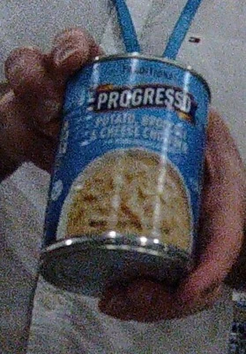
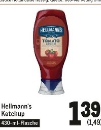
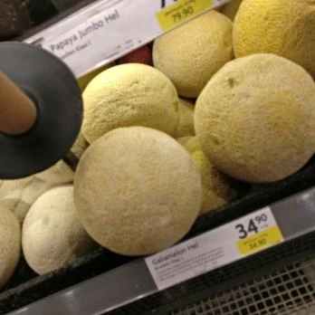

Thinking Fast and Slow for Label-Free Open-Catalog Product Retrieval
Artificial Intelligence Graduate Program, University of the Philippines, Diliman, Quezon City
Physical Retail AI Workshop (PRAW), IEEE/CVF Winter Conference on Applications of Computer Vision (WACV) 2027 (Oral Presentation)


Abstract
Grocery retrieval systems match a camera frame to catalog texts with a frozen vision-language model (VLM) and a reranker trained on labels. New brands enter an open catalog with text and at most one picture per product, but no labeled frames. Store cameras gradually record unlabeled views as shoppers pick up these products. To adapt from these frames, we propose ShelfTaught, a fast thinker (System 1) and slow thinker (System 2) approach.
The frozen fast thinker ranks new products at insertion and answers when its calibrated shortlist holds one entry or its top choice has too few training targets. Otherwise the slow thinker matches image patches to tokens in the shortlisted descriptions. An offline VLM teacher answers multiple choice questions about candidate texts, with catalog pictures for ambiguous frames. A label model combines its answers and retrieval scores with a von Mises–Fisher mixture of frame embeddings, balancing assignments across products to select training targets. We calibrate on validation labels across brands and verify packaging cues on unlabeled images from all folds.
On held-out brands, Recall@1 rises from 78.7% to 91.2% on GroceryVision, from 94.4% to 95.5% on Retail-786k and from 75.8% to 93.1% on Klasson. TransCLIP with teacher answers reaches 97.0% on Retail-786k. When invoked, reranking adds 0.02% to the image tower’s FLOPs at test time and 1.4% to measured latency.
Video explainer
Chapters and transcript
- 0:00The first retrieval pass
A shopper picks up a box of garbanzo beans. The checkout camera sees the box, a hand, and the shelf behind them. The frozen retriever compares this whole image with every catalog description. The can scores 0.220. The box scores 0.218. A difference of two thousandths puts the wrong package first. Where can a reranker learn to distinguish them?
- 0:24An offline teacher
As shoppers handle new products, the store collects more views. Their product identities are unknown. Consider this training photograph of apples. Given ten candidate names, the teacher assigns 86.5% to Royal Gala. Adding catalog pictures still leaves Royal Gala first. Both answers are wrong. Should this frame teach the reranker to recognize Royal Gala?
- 0:49Inferring the training label
A label model treats the product as unknown. It combines the retrieval scores and both teacher answers with evidence from other store frames. Each dot is a frame. Its position shows similarity to two fitted product clusters. Follow the ring around our photograph. At initialization, Pink Lady has less than one percent probability. After one update it passes ninety percent. After fifteen, it reaches 99.5%. The retriever also voted for Pink Lady. The frame meets both conditions and becomes a training example.
- 1:24Training the reranker
The slow thinker learns two projections. One maps image patches and the other maps catalog tokens into the same space. For each patch, take its best token match. Moving to a different patch changes the similarities. Average the best matches across all 576 patches. During training, the inferred target competes with the other nine entries.
- 1:46Back at checkout
Return to the box of beans. At checkout the teacher stays offline. The frozen retriever builds a shortlist. A single candidate is returned directly. An ambiguous frame is reranked only when the first choice has enough retained training targets. Here three entries remain. The patch comparisons put the box first with probability 0.92.
- 2:09Held-out brands
On GroceryVision and Klasson, reranking raises recall by 12.5 and 17.3 percentage points. On Retail-786k, the gain is 1.1 points. TransCLIP with teacher answers reaches 97.0% there.
Motivation
Automated checkout systems in groceries employ computer vision models that perform multimodal product retrieval. One input is a photograph of the product, often taken by a camera mounted inside the store. Shelves and other items fill the background, a shopper’s hand can cover the label, and motion can blur the print. The other input is the product catalog. Each text entry names the brand and variant, describes the product, and may list attributes such as price and net weight.
A shopper picks up a box of 365 Organic Garbanzo Beans. The frozen retriever puts the can first and the box second because both entries match much of what it sees. On GroceryVision, 65% of its errors on new brands are substitutions within the same brand. A common solution in retrieval systems is to search the full catalog quickly, then use a reranker to compare the few remaining candidates more closely.
Automated retail checkout
Scan a recorded store frame to see the first cart entry, then rerank its shortlist. Both passes use scores from the experiment.

A new product can enter the first pass as soon as the store adds its description. As cameras record more views of the product in shoppers’ hands, ShelfTaught uses them to train the reranker.
Inside our algorithm
A label model estimates the unknown product in each training frame. It observes which entries the retriever ranks highly, how the teacher answers two questions, and which other store frames look similar. A teacher that repeatedly calls Pink Lady apples Royal Gala can still be informative once the model learns that pattern.
The first five steps below follow one Klasson training frame. The last step applies the trained reranker to a different photograph. The scores come from the experiment.
ShelfTaught pipeline
Select a component to see what it reads and returns. The training frame and the checkout queries show the same apple variety, Pink Lady. Figure 1 in the paper.
The teacher gets catalog pictures when its preliminary shortlist S₀(x) has at least two entries. At checkout, the retriever uses the temperature fitted by the label model. Retained targets train the slow thinker and supply the per-product counts used by the gate.
Rank the catalog
Frozen SigLIP2 compares the frame with all 81 catalog descriptions. Pink Lady ranks first. The teacher receives the ten highest scoring descriptions.
Results
We report the percentage of held-out queries for which the first catalog entry is correct (Recall@1). Each dataset has ten brand splits. We average three reranker runs per split for the main result.
| Retrieval method and source | Held-out brand Recall@1 (%) ↑ | ||
|---|---|---|---|
| Grocery | Retail- | Klasson | |
| Frozen retrieval and adaptation on unlabeled frames | |||
| Frozen SigLIP2 arXiv’25 | 78.7 | 94.4 | 75.8 |
| TDA CVPR’24 | 79.7 | 94.7 | 77.7 |
| Tip-Adapter cache ECCV’22 | 78.5 | 93.1 | 70.9 |
| TransCLIP NeurIPS’24 | 87.7 | 95.5 | 84.9 |
| ReCLIP WACV’24 | 82.3 | 94.9 | 85.5 |
| OTTER NeurIPS’24 | 76.5 | 83.9 | 75.8 |
| DPA WACV’25 | 84.6 | 95.7 | 81.4 |
| TransCLIP + teacher NeurIPS’24, teacher variant evaluated here | 89.3 | 97.0 | 86.3 |
| Supervised transfer from seen brands | |||
| ROADMAP NeurIPS’21 | 47.2 | 73.8 | 29.4 |
| CSO ICML’23 | 65.9 | 79.3 | 38.9 |
| PEFT-DML ICLR’24 | 61.5 | 82.2 | 70.8 |
| TCM ICLR’24 | 54.0 | 72.3 | 45.8 |
| UDON NeurIPS’24 | 60.3 | 78.6 | 60.0 |
| DoRA fine-tune ICML’24 | 85.2 | 95.2 | 85.9 |
| Other training and inference settings | |||
| Cat2Real (external pretraining) arXiv’26 | 83.2 | 84.9 | 84.7 |
| Fast thinker + teacher at test time Qwen model card, 2026 | 88.7 | 95.1 | 85.1 |
| ShelfTaught (Ours) WACVW’27 | 91.2 | 95.5 | 93.1 |
Qualitative results
These held-out queries show a corrected ranking, a query answered by the first pass, and a reranking error.



Teacher-assisted TransCLIP uses the same offline first answers and clusters all test queries together. ShelfTaught answers one query at a time. It reaches 91.2% versus 89.3% on GroceryVision and 93.1% versus 86.3% on Klasson. On Retail-786k, the frozen retriever already reaches 94.4%, and teacher-assisted TransCLIP leads at 97.0%.
TDA, TransCLIP and OTTER adapt on test frames. DPA uses the training and validation folds, and ReCLIP uses all three folds. The Tip-Adapter cache stores confident teacher predictions. Supervised transfer methods train on labeled products from other brands. Per-draw calibration results and standard deviations are in Table 1.
Which parts of the label model matter?
The feature mixture supplies more usable labels. On Klasson, removing it leaves target accuracy at 92.9%, but reduces the fraction of frames retained from 89.8% to 64.2%. The resulting reranker loses 7.5 percentage points of recall. Fitting the teacher’s confusion matrices adds 0.5 points on the same dataset.
| Training target source | Pseudo-label accuracy on seen-brand validation frames (%) ↑ | Reranker Recall@1 on held-out brands (%) ↑ | ||
|---|---|---|---|---|
| Grocery | Klasson | Grocery | Klasson | |
| ShelfTaught and ablations from this study | ||||
| ShelfTaught (Ours) WACVW’27 | 92.7 | 92.9 | 91.4 | 93.1 |
| Without equipartition | 92.0 | 89.3 | 90.7 | 88.7 |
| Without feature mixture | 91.5 | 92.9 | 85.0 | 85.6 |
| Without picture question | 89.9 | 89.5 | 90.0 | 88.9 |
| Without first question | 91.5 | 90.7 | 90.8 | 92.8 |
| Without teacher | 90.0 | 88.0 | 86.5 | 84.4 |
| Fixed confusion matrices | 93.0 | 90.2 | 91.2 | 92.6 |
| Score fusion | 87.8 | 79.5 | 87.1 | 78.3 |
| Other label models | ||||
| Majority vote Voting rule | 87.4 | 78.5 | 89.4 | 77.5 |
| Dawid–Skene JRSS Series C’79 | 87.6 | 80.7 | 87.4 | 83.3 |
| GLAD NeurIPS’09 | 89.3 | 78.6 | 89.2 | 81.1 |
| Snorkel AAAI’19 | 88.0 | 77.8 | 89.3 | 80.5 |
| Hyper label model ICLR’23 | 88.7 | 81.0 | 89.4 | 80.9 |
Majority vote counts the sources’ first choices. Dawid–Skene learns which entries each source tends to confuse. ShelfTaught also uses the teacher’s answer probabilities and similarities among store frames. With the same number of training targets, their rerankers reach 77.5%, 83.3%, and 93.1% on Klasson, respectively. Target accuracy is measured on validation frames of seen brands. See Table 2.
Inference cost and cold start
The reranker has 0.34 million parameters and reuses the frozen image features. On frames it handles, it adds 0.24 GFLOPs to the image tower’s 1,393 GFLOPs and 0.22 ms to its 16.2 ms measured latency. The 27B teacher runs offline. With zero retained frames per new GroceryVision product, the coverage gate gives 77.9% recall, compared with 41.5% for ungated reranking and 78.7% for the frozen retriever.
Shelf quiz
Which catalog entry matches the store frame? Choose an entry to see the recorded predictions from both models. These three GroceryVision examples include one reranking error.
BibTeX
@inproceedings{maminta2027shelftaught,
title={Thinking Fast and Slow for Label-Free Open-Catalog Product Retrieval},
author={Maminta, Emmanuel G. and Atienza, Rowel O.},
booktitle={2027 IEEE/CVF Winter Conference on Applications of Computer Vision Workshops (WACVW)},
year={2027},
month=jan,
publisher={IEEE},
note={Physical Retail AI Workshop (PRAW)}
}